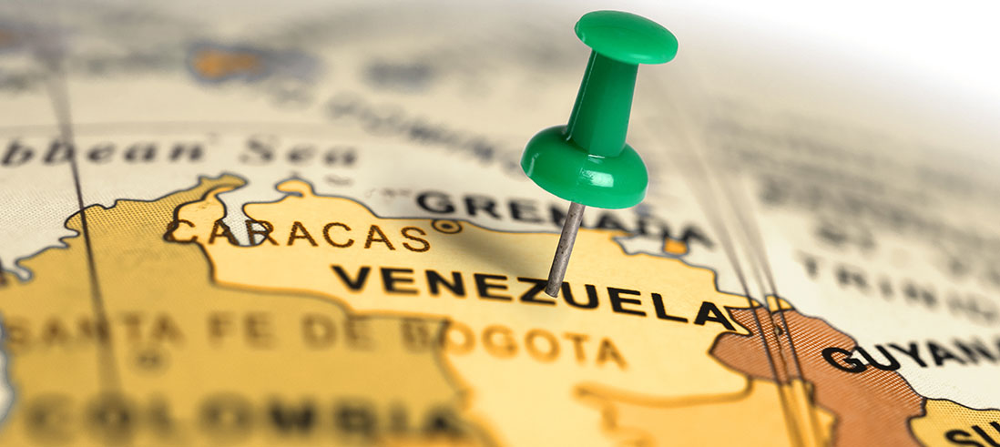
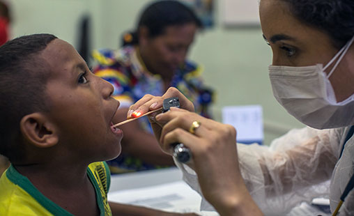
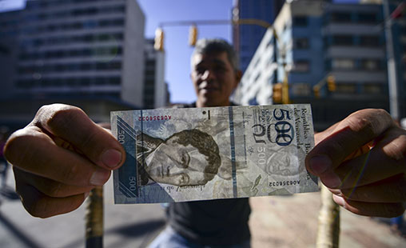
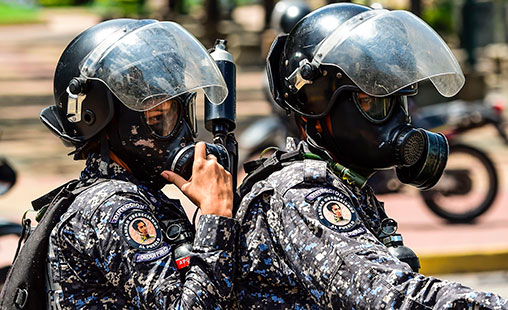
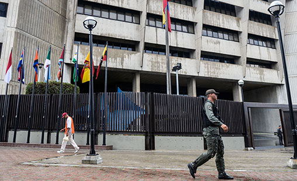
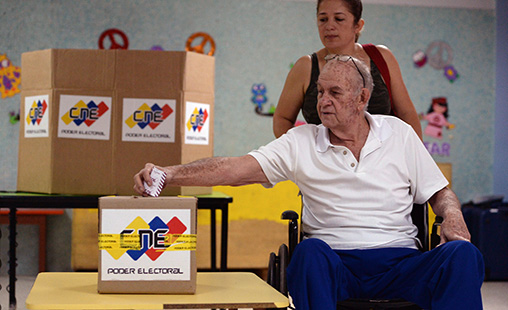

WHAT IS AT STAKE?
Internationally, the Venezuelan crisis is viewed as one of the most serious cases of a collapsing middle-income nation-state in modern history, and certainly one of the most dramatic and challenging transitions ever seen in the Americas. The next administration, whenever it arrives, will require sustained and coordinated international support in order to lead Venezuela in the right direction.
The priority, precedence, timing, appropriateness, and execution of recovery tasks will be essential for “the day after” in Venezuela. Venezuela requires sustained and coordinated international support to help assure citizen security, limit the suffering of its population, rebuild its state institutions and spark economic recovery. The ongoing violations of human rights, the presence of state-sponsored illegal armed groups, and exceptionally weak state institutions mean that extensive political, economic, and institutional reforms, backed by significant international humanitarian aid, technical cooperation and financial assistance, will be essential for the stabilization and rebuilding of Venezuela.
Building on CSIS’s ability to promote bi-partisan, high-level policy dialogue, CSIS seeks to establish a policy consensus for a comprehensive approach to tackle short- and long-term challenges facing Venezuela. The objective is to document the necessary policies and program actions collaboratively with relevant actors and identify those who can be mobilized to help the recovery of a once-prosperous nation.

Updated: November 21, 2017

Addresses basic human needs, in particular, the provision of emergency relief, restoration of essential health services, water, sanitation, and urgent measures to control and prevent epidemics. As the situation stabilizes, attention shifts from humanitarian relief to long-term social development.
Updated: November 21, 2017

Addresses fundamental economic needs, including requesting emergency measures to address the fiscal deficit and balance of payment gaps with multilateral institutions, defining and implementing a sovereign debt restructuring plan, and addressing inflation and currency stabilization while getting the oil sector back on track.
Updated: November 21, 2017

Addresses all aspects of public safety, starting with disarmament of irregular groups, addressing corruption and human rights violations within security forces, and development of legitimate and stable security institutions. Collective and individual security is a precondition for achieving successful outcomes in the other sectors.
Updated: November 21, 2017

Addresses the need for an impartial and accountable legal system and for dealing with past abuses; in particular, the establishment of a comprehensive transitional justice process with international support and restoration of civil and political rights.
Updated: November 21, 2017

Addresses the need for legitimate and effective political and administrative institutions and electoral processes; including demobilizing the National Constituent Assembly and restoring powers to the National Assembly according to the Constitution, in addition to establishing a system for fair and transparent elections.